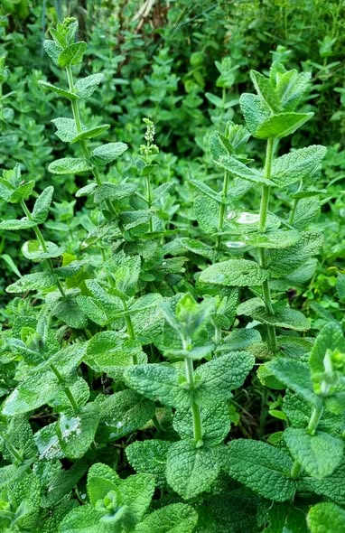

Ayuntamiento de Senés
JARDIN BOTANICO DE ESPECIES AUTOCTONAS DE SENES

Mentha suaveolens

El mastranzo (Mentha suaveolens) es una planta herbácea perenne perteneciente a la familia de las lamiáceas, muy extendida en zonas húmedas del ámbito mediterráneo. Se caracteriza por su intenso aroma y su crecimiento vigoroso en condiciones favorables.
Presenta tallos erectos o ligeramente rastreros, con hojas opuestas, ovaladas y de textura suave. Puede alcanzar entre 30 y 80 cm de altura, formando agrupaciones densas. Sus flores, de pequeño tamaño y color blanquecino o rosado, aparecen agrupadas en espigas terminales.
El mastranzo es propio de zonas húmedas y frescas del Mediterráneo, donde crece en márgenes de ríos, acequias, fuentes y terrenos con cierta humedad en el suelo.
En entornos como la Sierra de los Filabres, aparece en lugares donde el agua está presente de forma permanente o estacional, formando parte de la vegetación asociada a cursos de agua.
El mastranzo posee propiedades digestivas, carminativas y relajantes, siendo utilizado tradicionalmente en infusiones para aliviar molestias estomacales y favorecer la digestión.
También presenta efectos refrescantes y antisépticos, debido a su contenido en aceites esenciales, similares a los de otras especies del género Mentha.
El mastranzo simboliza la frescura, la pureza y el bienestar. Su aroma característico ha sido asociado tradicionalmente con la limpieza y la salud.
También representa la vitalidad de las zonas húmedas dentro de paisajes áridos, actuando como indicador de presencia de agua.
En Senés, el mastranzo se utilizaba el día del Corpus Christi, los seneseros (casi en su totalidad) cogían en barrancos haces de mastrazos para engalanar y perfumar los altares, plazas y calles por donde pasaba la procesión.
Como planta medicinal, se utilizaba como astringente, tónico, para la gripe, infecciones de higado, reduce la tensión arterial, desinfectante y regulador del sistema circulatorio. Se decía que no se debía tomar más de cuatro días seguidos.
El mastranzo florece principalmente durante el verano, produciendo espigas de pequeñas flores que atraen a insectos polinizadores, contribuyendo al equilibrio del ecosistema.
El mastranzo pertenece al mismo género que la menta, y comparte con ella muchas de sus propiedades y características aromáticas.
Es una planta muy apreciada por insectos polinizadores, especialmente abejas, lo que la convierte en una especie importante para la biodiversidad local.